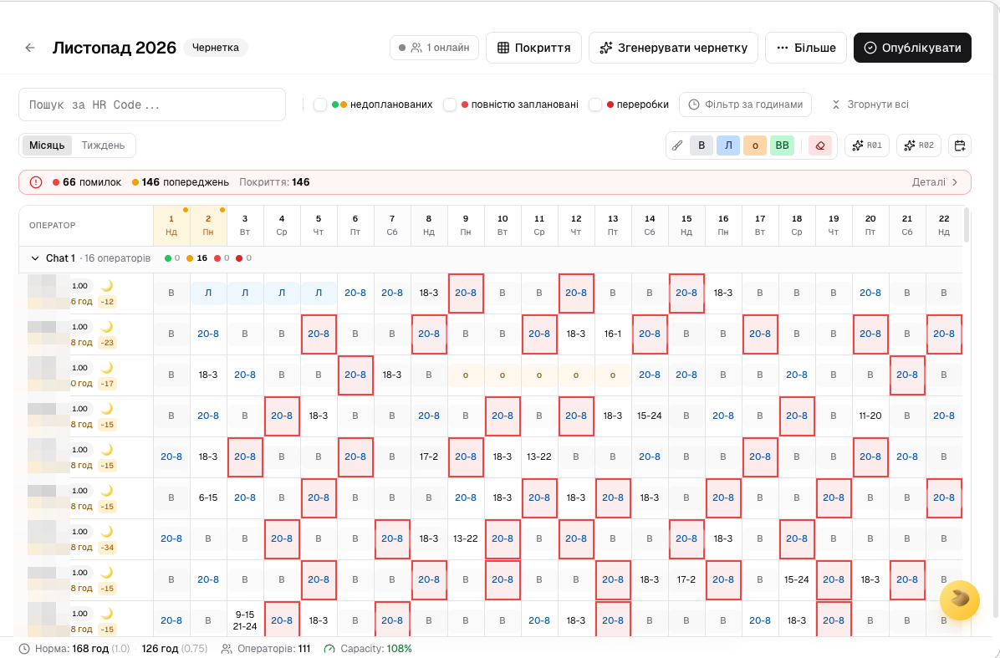

Вебзастосунок, що автоматизує побудову місячного графіка операторів кол-центру банку. Замінює ручне складання в Excel.
0
операторів
0
типи змін
0
правил валідації
0
релізів
0
ролі · Google SSO

Редактор графіка: 111 операторів, перевірки правил у реальному часі, покриття по годинах. Ідентифікатори приховано.